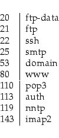

| Purchase | Copyright © 2002 Paul Sheer. Click here for copying permissions. | Home |
|
|
| |
Dialup networking is unreliable and difficult to configure. The reason is simply that telephones were not designed for data. However, considering that the telephone network is by far the largest electronic network on the globe, it makes sense to make use of it. This is why modems were created. On the other hand, the advent of ISDN is slightly more expensive and a better choice for all but home dialup. See Section 41.6 for more information.
For home use, dialup networking is not all that difficult to configure. The PPP HOWTO contains lots on this (see Section 16). For my machine this boils down to creating the files /etc/ppp/chap-secrets and /etc/ppp/pap-secrets, both containing the following line of text:
|
<username> * <password> * |
although only one of the files will be used, then running the following command at a shell prompt: [This example assumes that an initialization string of AT&F1 is sufficient. See Section 3.5.]
5 10 |
pppd connect \ "chat -S -s -v \ '' 'AT&F1' \ OK ATDT<tel-number> CONNECT '' \ name: <username> assword: '\q<password>' \ con: ppp" \ /dev/<modem> 57600 debug crtscts modem lock nodetach \ hide-password defaultroute \ user <username> \ noauth |
This is a minimalist's dial-in command and it's specific to my ISP only. Don't use the exact command unless you have an account with the Internet Solution ISP in South Africa, before January 2000.
The command-line options are explained as follows:
To determine the list of expect-send sequences, you need to do a manual dial-in. The command
|
dip -t |
stands for dial-IP and talks directly to your modem.
The following session demonstrates a manual dial for user psheer. Using dip manually like this is a game of trying to get the garbage lines you see below: this is PPP starting to talk. When you get this junk, you have won and can press ^C. Then, copy and paste your session for future reference.
5 10 15 20 25 |
[root@cericon]# dip -tDIP: Dialup IP Protocol Driver version 3.3.7o-uri (8 Feb 96)Written by Fred N. van Kempen, MicroWalt Corporation. DIP> port ttyS0DIP> speed 57600DIP> term[ Entering TERMINAL mode. Use CTRL-] to get back ]AT&F1OKATDT4068500CONNECT 26400/ARQ/V34/LAPM/V42BISChecking authorization, please wait...name:psheerpassword: c2-ctn-icon:pppEntering PPP mode.Async interface address is unnumbered (FastEthernet0)Your IP address is 196.34.157.148. MTU is 1500 bytes ~y}#A!}!e} }3}"}&} }*} } }~}&4}2Iq}'}"}(}"N$~~y}#A!}!r} }4}"}&} }[ Back to LOCAL mode. ]DIP> quit[root@cericon]# |
Now you can modify the above chat script as you need. The kinds of things that will differ are trivial: like having login: instead of name:. Some systems also require you to type something instead of ppp, and some require nothing to be typed after your password. Some further require nothing to be typed at all, thus immediately entering PPP mode.
Note that dip also creates UUCP lock files as explained in Section 34.4.
You may ask why there are
/etc/ppp/chap-secrets and
/etc/ppp/pap-secrets files if a user name and password are already
specified inside the the
chat script. CHAP (Challenge Handshake
Authentication Protocol) and PAP (Password Authentication Protocol)
are authentication mechanisms used after logging in--in other
words, somewhere amid the
~y}#A!}!e} }3}"}&} }*} } }~}&4}2Iq}'}"}(}"N$~~y}#A!}!r} }4}"}&} }.
If you run the pppd command above, you will get output something like this:
5 10 15 20 25 30 35 40 45 50 55 |
send (AT&F1^M)expect (OK)AT&F1^M^MOK -- got it send (ATDT4068500^M)expect (CONNECT)^MATDT4068500^M^MCONNECT -- got it send (^M)expect (name:) 45333/ARQ/V90/LAPM/V42BIS^MChecking authorization, Please wait...^Musername: -- got it send (psheer^M)expect (assword:)psheer^Mpassword: -- got it send (??????)expect (con:)^M^Mc2-ctn-icon: -- got it send (ppp^M)Serial connection established.Using interface ppp0Connect: ppp0 <--> /dev/ttyS0sent [LCP ConfReq id=0x1 <asyncmap 0x0> <magic 0x88c5a54f> <pcomp> <accomp>]rcvd [LCP ConfReq id=0x3d <asyncmap 0xa0000> <magic 0x3435476c> <pcomp> <accomp>]sent [LCP ConfAck id=0x3d <asyncmap 0xa0000> <magic 0x3435476c> <pcomp> <accomp>]rcvd [LCP ConfAck id=0x1 <asyncmap 0x0> <magic 0x88c5a54f> <pcomp> <accomp>]sent [IPCP ConfReq id=0x1 <addr 192.168.3.9> <compress VJ 0f 01>]sent [CCP ConfReq id=0x1 <deflate 15> <deflate(old#) 15> <bsd v1 15>]rcvd [IPCP ConfReq id=0x45 <addr 168.209.2.67>]sent [IPCP ConfAck id=0x45 <addr 168.209.2.67>]rcvd [IPCP ConfRej id=0x1 <compress VJ 0f 01>]sent [IPCP ConfReq id=0x2 <addr 192.168.3.9>]rcvd [LCP ProtRej id=0x3e 80 fd 01 01 00 0f 1a 04 78 00 18 04 78 00 15 03 2f]rcvd [IPCP ConfNak id=0x2 <addr 196.34.157.131>]sent [IPCP ConfReq id=0x3 <addr 196.34.157.131>]rcvd [IPCP ConfAck id=0x3 <addr 196.34.157.131>]local IP address 196.34.25.95remote IP address 168.209.2.67Script /etc/ppp/ip-up started (pid 671)Script /etc/ppp/ip-up finished (pid 671), status = 0x0 Terminating on signal 2.Script /etc/ppp/ip-down started (pid 701)sent [LCP TermReq id=0x2 "User request"]rcvd [LCP TermAck id=0x2] |
You can see the expect-send sequences working, so it's easy to correct them if you made a mistake somewhere.
At this point you might want to type route -n and ifconfig in another terminal:
5 10 15 20 |
[root@cericon]# route -nKernel IP routing tableDestination Gateway Genmask Flags Metric Ref Use Iface168.209.2.67 0.0.0.0 255.255.255.255 UH 0 0 0 ppp0127.0.0.0 0.0.0.0 255.0.0.0 U 0 0 0 lo0.0.0.0 168.209.2.69 0.0.0.0 UG 0 0 0 ppp0[root@cericon]# ifconfiglo Link encap:Local Loopback inet addr:127.0.0.1 Mask:255.0.0.0 UP LOOPBACK RUNNING MTU:3924 Metric:1 RX packets:2547933 errors:0 dropped:0 overruns:0 frame:0 TX packets:2547933 errors:0 dropped:0 overruns:0 carrier:0 collisions:0 txqueuelen:0 ppp0 Link encap:Point-to-Point Protocol inet addr:196.34.25.95 P-t-P:168.209.2.67 Mask:255.255.255.255 UP POINTOPOINT RUNNING NOARP MULTICAST MTU:1500 Metric:1 RX packets:7 errors:0 dropped:0 overruns:0 frame:0 TX packets:7 errors:0 dropped:0 overruns:0 carrier:0 collisions:0 txqueuelen:10 |
This clearly shows what pppd has done: created a network device and a route to it.
If your name server is configured, you should now be able to ping metalab.unc.edu or some well-known host.
Dial-on-demand really just involves adding the demand option to the pppd command-line above. The other way of doing dial-on-demand is to use the diald package, but here we discuss the pppd implementation. The diald package is, however, a far more thorough solution.
With the demand option, you will notice that spurious dialouts take place. You need to add some filtering rules to ensure that only the services you are interested in cause a dialout. These services should only make outgoing connections when absolutely necessary.
A firewall script might look as follows. This example uses the old ipfwadm command, possibly called /sbin/ipfwadm-wrapper on your machine. [The newer ipchains command is now superseded by a completed different packet filtering system in kernel 2.4.] See the Firewall-HOWTO for more information on building a firewall.
5 10 15 20 25 30 |
# Enable ip forwarding and dynamic address changing:echo 1 > /proc/sys/net/ipv4/ip_forwardecho 1 > /proc/sys/net/ipv4/ip_dynaddr # Clear all firewall rules:/sbin/ipfwadm -O -f/sbin/ipfwadm -I -f/sbin/ipfwadm -F -f /sbin/ipfwadm -O -p deny/sbin/ipfwadm -I -p deny # Allow all local communications:/sbin/ipfwadm -O -a accept -D 192.168.0.0/16 -S 0.0.0.0/0/sbin/ipfwadm -O -a accept -D 127.0.0.0/24 -S 127.0.0.0/24/sbin/ipfwadm -O -a accept -S 192.168.0.0/16 -D 127.0.0.0/24/sbin/ipfwadm -O -a accept -S 192.168.0.0/16 -D 192.168.0.0/16/sbin/ipfwadm -I -a accept -S 192.168.0.0/16 -D 0.0.0.0/0/sbin/ipfwadm -I -a accept -S 127.0.0.0/24 -D 127.0.0.0/24/sbin/ipfwadm -I -a accept -D 192.168.0.0/16 -S 127.0.0.0/24/sbin/ipfwadm -I -a accept -D 192.168.0.0/16 -S 192.168.0.0/16 # Allow ports outgoing:/sbin/ipfwadm -O -a accept -P tcp -S 0.0.0.0/0 \ -D 0.0.0.0/0 20 21 22 25 53 80 110 119 143/sbin/ipfwadm -O -a accept -P udp -S 0.0.0.0/0 -D 0.0.0.0/0 53 # # Add this line to allow FTP from masqueraded machines:# /sbin/ipfwadm -O -a accept -P tcp -S 0.0.0.0/0 -D 0.0.0.0/0 1024:65535 # Allow ports incoming:/sbin/ipfwadm -I -a accept -P tcp -S 0.0.0.0/0 -D 0.0.0.0/0 20 113/sbin/ipfwadm -I -a accept -P tcp -S 0.0.0.0/0 -D 0.0.0.0/0 1024:65535/sbin/ipfwadm -I -a accept -P udp -S 0.0.0.0/0 -D 0.0.0.0/0 1024:65535 |
The ports we are using are

The auth service is not needed but should be kept open so that connecting services get a failure instead of waiting for a timeout. You can comment out the auth line in /etc/inetd.conf for security.
If you have a LAN of machines that needs to share the same dialup link, then you can give them all 192.168. addresses and masquerade the LAN through the PPP interface. IP masquerading or NAT (network address translation) can be done with:
5 |
# Masquerading for ftp requires special handling on older kernels:/sbin/modprobe ip_masq_ftp # Masquerade the domain 192.168.2.0/255.255.128.0/sbin/ipfwadm -F -f/sbin/ipfwadm -F -p deny/sbin/ipfwadm -F -a m -S 192.168.0.0/17 -D 0.0.0.0/0 |
The pppd script becomes (note that you need pppd-2.3.11 or later for this to work as I have it here):
5 10 |
pppd connect \ "chat -S -s -v \ '' 'AT&F1' \ OK ATDT<tel-number> CONNECT '' \ name: <username> assword: '\q<password>' \ con: ppp" \ /dev/ttyS0 57600 debug crtscts modem lock nodetach \ hide-password defaultroute \ user <username> \ demand \ :10.112.112.112 \ idle 180 \ holdoff 30 |
Your DNS service, to be used on a dialup server, requires some customization. Replace your options section from the DNS configurations in Chapter 40 with the following:
5 |
options { forwarders { 196.7.173.2; /* example only */ }; listen-on { 192.168.2.254; }; directory "/var/cache/bind"; dialup yes; notify no; forward only;}; |
The options dialup yes; notify no; forward only; tell bind to use the link as little as possible; not send notify messages (there are no slave servers on our LAN to notify) and to forward requests to 192.168.2.254 rather than trying to answer them itself; respectively. The option listen-on causes the name server to bind to the network interface 192.168.2.254 only. In this example, the interface 192.168.2.254 is our Ethernet card which routes packets from the local LAN. This is important for security, because it prevents any possible connection from the outside.
There is also a DNS package written specifically for use by dialup servers. It is called dnrd and is much easier to configure than bind.
pppd is really just a way to initiate a network device over a serial port, regardless of whether you initiate or listen for a connection. As long as there is a serial connection between two machines, pppd will negotiate a link.
To listen for a pppd dial-in, you need just add the following line to your /etc/inittab file:
|
S0:2345:respawn:/sbin/mgetty -s 115200 ttyS0 |
and then the line
|
/AutoPPP/ - a_ppp /usr/sbin/pppd |
to the file /etc/mgetty+sendfax/login.config ( /etc/mgetty/login.config for Debian). For security, you would probably want to run chmod a-s /usr/sbin/pppd, since mgetty runs pppd as root anyway. Your /etc/ppp/options file could contain
|
proxyarp mtu 552 mru 552 require-chap <hostname>: |
Note that we dispense with the serial line options (i.e., speed and flow control) because mgetty would have already initialized the serial line. <hostname> is just the name of the local machine. The proxyarp setting adds the remote client to the ARP tables. This enables your client to connect through to the Internet on the other side of the line without extra routes. The file /etc/ppp/chap-secrets can be filled with lines like,
|
dialup * <passwd> 192.168.254.123 |
to specify the IP address and password of each user.
Next, add a user
dialup and perhaps set its
password to that in the
chap-secrets file. You can then test
your configuration from a remote machine with
dip -t
as above. If that works (i.e.,
mgetty answers, and
you get your garbage lines as on page
![[*]](crossref.png) ), then a proper
pppd dial-in
should also work. The
/etc/ppp/chap-secrets file can contain:
), then a proper
pppd dial-in
should also work. The
/etc/ppp/chap-secrets file can contain:
|
dialup * <passwd> * |
and you can dial out using a typical pppd command, like this:
5 |
pppd \ connect "chat -S -s -v '' 'AT&F1' OK ATDT<telephone> CONNECT ''" /dev/<modem> 57600 debug crtscts modem lock nodetach hide-password defaultroute \ user dialup \ noauth |
You should be carefully to have a proper DNS configuration for forward and reverse lookups of your pppd IP addresses. This is so that no services block with long timeouts and also so that other Internet machines will be friendly to your user's connections.
Note that the above also supports faxes, logins, voice, and uucp (see Section 34.3) on the same modem because mgetty only starts pppd if it sees an LCP request (part of the PPP protocol). If you just want PPP, read the config files in /etc/mgetty+sendfax/ (Debian /etc/mgetty/) to disable the other services.
If a dialout does occur unexpectedly, you can run tcpdump to dump packets going to your ppp0 device. This output will probably highlight the error. You can then look at the TCP port of the service and try to figure out what process the packet might have come from. The command is:
|
tcpdump -n -N -f -i ppp0 |
tcpdump is also discussed in Section 25.10.3.
For those who are not familiar with ISDN, this paragraph gives you a quick summary. ISDN stands for Integrated Services Digital Network. ISDN lines are like regular telephone lines, except that an ISDN line comes with two analog and two digital channels. The analog channels are regular telephone lines in every respect--just plug your phone in and start making calls. The digital lines each support 64 kilobits/second data transfer; only ISDN communication equipment is meant to plug in to these and the charge rate is the same as that of a telephone call. To communicate over the digital line, you need to dial an ISP just as with a regular telephone. PPP runs over ISDN in the same way as a modem connection. It used to be that only very expensive ISDN routers could work with ISDN, but ISDN modems and ISDN ISA/PCI cards have become cheap enough to allow anyone to use ISDN, and most telephone companies will install an ISDN line as readily as a regular telephone line. So you may ask what's with the ``Integrated Services.'' I suppose it was thought that this service, in allowing both data and regular telephone, would be the ubiquitous communications service. It remains to be seen, however, if video conferencing over 64-Kb lines becomes mainstream.
ISDN is not covered in detail here, although ample HOWTOs exists on the subject. Be wary when setting up ISDN. ISDN dials really fast. It can dial out a thousand times in a few minutes, which is expensive.